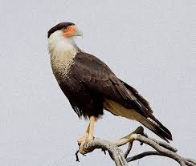
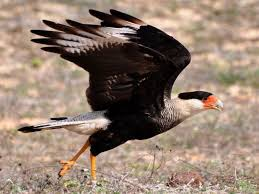
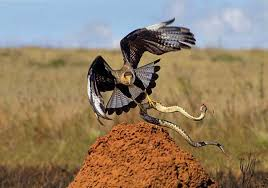
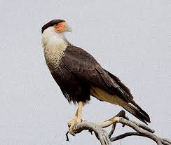
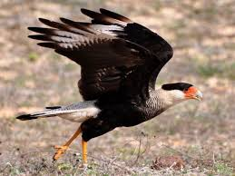
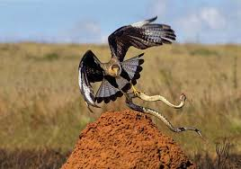
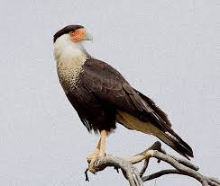
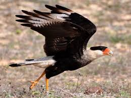
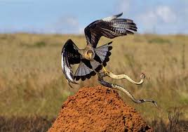

O carcará é uma ave majestosa. Seu corpo é coberto por uma plumagem preta. Próximo ao pescoço, a cor branca se torna predominante, traço que o diferencia de outras espécies. Seu tamanho pode chegar a 56 cm e possui uma envergadura (comprimento de uma asa aberta a outra) de pouco mais de um metro, que lhe oferece excelente habilidade de voo


